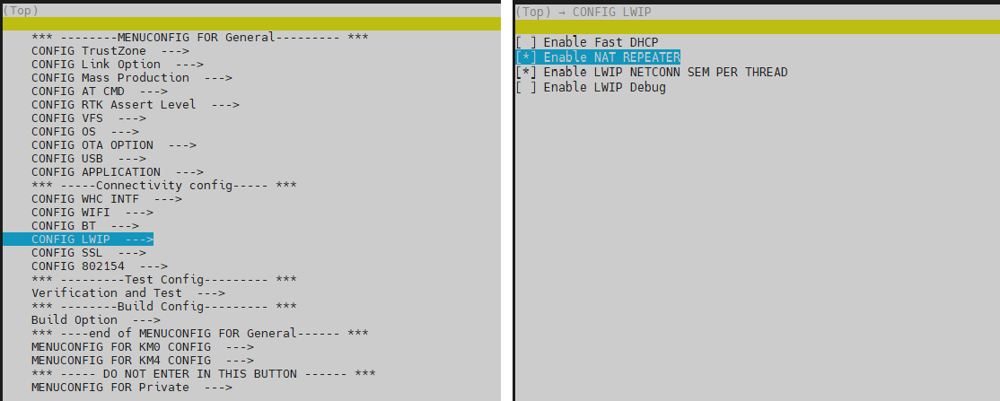

Wi-Fi R-Mesh 拓扑结构
如下图所示, Wi-Fi R-Mesh 是一个树形mesh网络, 用于增加Wi-Fi覆盖范围, 让距离AP比较远的设备也能获得稳定的网络连线。

Wi-Fi R-Mesh 拓扑结构
Wi-Fi R-Mesh 的特点
Wi-Fi R-Mesh 具有以下突出优势:
应用层软件开发无感:
所有的mesh协议都在Wi-Fi驱动层实现，不管是根节点还是子节点，应用层都可以视为当前的节点是一个和AP连接的Wi-Fi Station。
Wi-Fi配网程序无需更新。
百微妙级别的快速配对和切换:
当检测到信号更好的父节点的时候，子节点可以快速的从旧的父节点切换到新的父节点，而不影响数据通信。
当父节点发生问题时（掉电或挂住），子节点可以迅速检测到并切换到另外一个父节点而不影响数据通信。
一个节点可以携带其所有的子节点一起切换到另外一个父节点，所有节点的数据通信不受影响。
经过数跳的设备也具备较高的吞吐量:
R-Mesh 转发无需经过TCP/IP协议栈， 数据转发都在底层驱动实现，可以节省 SRAM 和 MCU 算力。
软件处理时间极短，可以获得更好的吞吐量。
整个mesh网络具有很高的稳定性:
软件处理极其简单，也不需要算法维护路由表，所以整个网络会非常的稳定。
传统mesh网络的“环路”问题不会发生。
Wi-Fi R-Mesh 的数据流
Wi-Fi R-Mesh直接在Wi-Fi驱动层实现数据转发, 消耗极少的SRAM和MCU算力。
由于需要极少的软件处理过程，所以即使经过几跳的节点也会有很好的吞吐量。

Wi-Fi R-Mesh 的数据流
Wi-Fi R-Mesh 的网络容量
Wi-Fi R-Mesh 中每个根节点下可以连接的子节点个数称为R-Mesh的网络容量。
如下图所示的例子中，网络容量为 4，则每个根节点只可以连接4个节点，不管拓扑的形式是哪一种。
拓扑 0: 所有子节点都直接连接到根节点。
拓扑 3: 4个节点形成一个4跳的线型网络
也可能是拓扑0和拓扑3之间的其它拓扑结构
Wi-Fi R-Mesh 网络容量
Wi-Fi R-Mesh NAT
由于R-Mesh的每个节点都会和AP创建真实的WIFI连线，在AP可以连接的Station数量受限的情况下，R-Mesh可以支持的节点个数也会受限。 基于此，我们可以使用Station + SoftAP基于NAT协议来扩展R-Mesh中节点的数量。此时，根节点及子节点会和SoftAP进行连线， 而不是和AP进行连线。NAT协议用于AP网络和R-Mesh网络之间的数据转发。
在R-Mesh中我们成这样的节点为R-NAT节点。
如下图所示，R-NAT节点放在根节点和AP之间，用于扩展可以接入网络的节点的数量。

Wi-Fi R-NAT
Wi-Fi R-Mesh 的吞吐量
吞吐量
Wi-Fi R-Mesh 的吞吐量数据如下表所示：
Test scenario |
Layer |
UDP Tx (Mbps) |
UDP Rx (Mbps) |
TCP Tx (Mbps) |
TCP Rx (Mbps) |
|---|---|---|---|---|---|
Single Node |
Layer1 |
54.2 |
39.5 |
17.0 |
15.7 |
Layer2 |
19.6 |
18.8 |
9.6 |
10.0 |
|
Layer3 |
12.8 |
11.6 |
6.9 |
7.0 |
|
Layer4 |
9.4 |
8.2 |
5.4 |
5.2 |
|
Layer5 |
7.5 |
6.2 |
4.4 |
4.3 |
|
L1 + L2 |
Layer1 |
21.0 |
21.2 |
||
Layer2 |
12.5 |
14.0 |
|||
L1 + L2 + L3 |
Layer1 |
14.0 |
13.3 |
||
Layer2 |
7.0 |
7.2 |
|||
Layer3 |
5.1 |
6.4 |
|||
L1 + L2 + L3 + L4 |
Layer1 |
10.0 |
12.1 |
||
Layer2 |
4.0 |
8.4 |
|||
Layer3 |
3.6 |
6.7 |
|||
Layer4 |
3.0 |
4.0 |
|||
L1 + L2 + L3 + L4 + L5 |
Layer1 |
9.0 |
10.4 |
||
Layer2 |
3.2 |
3.7 |
|||
Layer3 |
2.5 |
2.9 |
|||
Layer4 |
2.3 |
1.8 |
|||
Layer5 |
1.8 |
2.1 |
通过Iperf测试吞吐量
与普通的Station或者AP模式无异，我们可以通过iperf测试R-Mesh的吞吐量。如下图所示，在AP端和节点端的PC上输入iperf指令即可。

R-Mesh的吞吐量测试
UDP Tx 测试
节点端通过UART输入如下AT指令:
AT+IPERF=-c,<server IP>,-i,<periodic>,-u,-b,<bandwidth>,-t,<transtime>,-p,<port>
AP端通过Terminal输入如下iperf指令:
iperf -s -i <periodic> -u -p <port>
UDP Rx 测试
节点端通过UART输入如下AT指令:
AT+IPERF=-s,-i,<periodic>,-u,-p,<port>
AP端通过Terminal输入如下iperf指令:
iperf -c <R-mesh node IP> -i <periodic> -u -b <bandwidth> -t <transtime> -p <port>
TCP Tx 测试
节点端通过UART输入如下AT指令:
AT+IPERF=-c,<server IP>,-i,<periodic>,-t,<transtime>,-p,<port>
AP端通过Terminal输入如下iperf指令:
iperf -s -i <periodic> -p <port>
TCP Rx 测试
节点端通过UART输入如下AT指令:
AT+IPERF=-s,-i,<periodic>,-p,<port>
AP端通过Terminal输入如下iperf指令:
iperf -c <R-mesh node IP> -i <periodic> -t <transtime> -p <port>
Wi-Fi R-Mesh RTT
不同于BLE和Zigbee，R-Mesh的RTT（Round-Trip Latency）是非常低的，并且不会随着数据包的增大而明显增加。

Wi-Fi R-Mesh 可视化演示工具-Gravitation
测试环境
AP和PC通过网络连接，Gravitation运行于PC上，如下图所示：

Wi-Fi R-Mesh 测试环境
概述
Gravitation可以用于显示所有接入AP的R-Mesh节点极其拓扑结构，其主要特点如下：
及时显示网络拓扑及其改变。
可以做ping测试。

Gravitation
每个节点会显示：MAC_Addr:IP (更新时间).
比如 CE:192.168.1.100(5:6) 代表MAC地址为XX:XX:XX:XX:0xCE, 其IP地址为 192.168.1.100。
节点之间的连线上显示的两个红色的数字表示当前父节点的得分以及最优候选节点的得分，该得分是以信号强度为基础计算得到。
Gravitation和R-Mesh节点之间是通过socket进行通讯的，节点定期将自己的IP地址、父节点MAC地址等信息通过socket发给Gravitation所在的PC，Gravitation解析后显示拓扑的实时情况。 用户可以参考此套设计，重新开发自己的应用，用于获取并显示R-Mesh网络的拓扑情况。
Gravitation使用指南
测试工具的位置
Gravitation的目录为: {sdk}/tools/R-Mesh_Demo_Tool.
测试步骤
测试步骤如下：
将AP和PC通过网络连接，执行gravitation.exe
打开gravitation文件夹下的文件
config.yaml, 配置所要测试的AP。你可以同时添加多个AP：ap_mac_list: - 00:11:22:33:44:55
配置ping间隔以及ping包长度（不配置则使用默认参数）:
ping: interval: 500 packet_size: 64
其中ping间隔也可以通过gravitation界面直接配置。
此时gravitation配置完成，关闭gravitation并重新运行gravitation.exe，所有配置即刻生效。
使用AT指令让每个测试节点连接AP，之后节点会自动进行Mesh组网。你可以在gravitation观察到每个节点的连接状况及网络拓扑。
AT+WLCONN=ssid,rmesh_test,pw,12345678
gravitation默认采用自动布局的方式，默认情况下可以拖动AP，但是无法拖动R-Mesh节点，若需要手动拖动节点来自行布局，则需要将界面右下角的”自动布局“勾选去除。
gravitation默认采用自动显示信息的方式，每个节点的部分信息会自动显示在节点的右上角，可以通过取消勾选界面右下角的”显示信息“栏位，来取消信息的自动显示，此模式下，当点击某一个节点时，会在该节点的右上方显示完整MAC地址，IP地址，同时还会显示一个scan list记录了该节点所扫描到的的周围节点的MAC地址最后一个byte、信号强度等信息。

手动显示信息
Wi-Fi R-Mesh参数配置
您只需要配置有限的几个参数即可使用R-Mesh（不配置则会使用默认配置）。
打开文件 {sdk}/component/soc/usrcfg/amebadplus/ameba_wificfg.c ，可以看到如下参数，修改后重新编译SDK即可。
/*R-mesh*/
wifi_user_config.wtn_en：R-Mesh功能的总开关，写1表示使能，R-Mesh的所有节点以及R-NAT节点都需要将其写1。
wifi_user_config.wtn_strong_rssi_thresh：RSSI高于这个阈值，则节点会作为root或者R-NAT直接连接AP。
wifi_user_config.wtn_father_refresh_timeout：单位为毫秒，超过这个时间如果节点没有收到父节点的beacon，则会切换父节点。
wifi_user_config.wtn_child_refresh_timeout：单位为毫秒，超过这个时间如果父节点没有收到子节点的beacon，则会删除这个子节点。
wifi_user_config.wtn_max_node_num：R-Mesh网络中最大节点数量，此数量会用于决定每个节点发送beacon的窗口大小，节点数量越多，发送beacon的窗口越小，且发送间隔会变大。
Wi-Fi R-Mesh NAT参数配置与编译设定
R-Mesh NAT功能默认处于关闭状态，请按如下步骤进行配置，然后参考 R-Mesh SDK获取及编译 进行编译:
打开文件
{sdk}/component/soc/usrcfg/amebadplus/ameba_wificfg.c，可以看到如下参数，并进行对应修改。wifi_user_config.wtn_rnat_en：Wi-Fi R-Mesh NAT功能的开关，写1表示使能该功能，对于R-NAT节点需要使能该功能，其他节点不许需要使能该功能。 wifi_user_config.ap_sta_num：对于R-NAT节点，该参数表示与该R-NAT节点下可以直接连接的client数量，当数量配置成大于5个时，需要修改memory layout，目前最大可以支持14个client。
当修改wifi_user_config.ap_sta_num后，若需要调整memory layout，请参考如下步骤:
打开sdk中的
{sdk}/amebadplus_gcc_project/amebaDplus_layout.ld文件， 将其中的RAM_KM0_IMG2_SIZE由默认的96K调整到116k，可以支援R-NAT节点直接连接14个client。#define RAM_KM0_IMG2_SIZE KBYTES(116)R-Mesh NAT功能需要使能LWIP的NAT功能，请按如下步骤修改menuconfig:
在
{sdk}/amebadplus_gcc_project中执行./menuconfig.py, 找到 , 然后选择 。
{kind=link}
R-Mesh SDK获取及编译
获取SDK和R-Mesh WLAN lib：
默认SDK的R-Mesh中根节点只可以连接2个节点，如需根节点可连接4个节点，需额外索取R-Mesh WLAN lib：联系 <claire_wang@realsil.com.cn>
下载SDK：IoT SDK
默认SDK的R-Mesh的编译：
设定wifi_user_config.wtn_en=1，并根据需求设定其余R-Mesh相关的wifi_user_config选项
然后编译image即可使用R-Mesh测试
若需测试根节点连接4个节点的场景，获取lib后替换文件和编译image：
替换
{sdk}/amebadplus_gcc_project/project_km4/asdk/lib/application路径下的lib_wifi_whc_ap.a替换
{sdk}/amebadplus_gcc_project/project_km0/asdk/lib/application路径下的lib_wifi_common.a，lib_wifi_fw.a和lib_wifi_whc_np.a然后编译image即可使用R-Mesh
R-Mesh 内存占用
开启R-Mesh后，内存会额外多占用如下size:
项目 |
KM0 |
|---|---|
txt |
22KB |
rodata |
2.4KB |
data+bss |
0.9KB |
heap |
20KB |